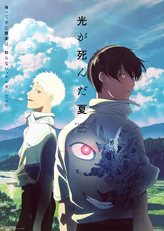

8.5
光逝去的夏天
The Summer Hikaru Died
2025
日本
评分 8.5
导演:
竹下良平
演员:
小林千晃 / 梅田修一朗 / 小林亲弘 / 小若和郁那 / 花守由美里
类型:
奇幻,悬疑,惊悚
剧情简介
盛夏的乡间被蝉声牢牢包围，空气里带着潮湿的燥热。佳纪沿着熟悉的小路走着，身旁的光依旧笑得随性自然，仿佛两人从未分开过。然而，佳纪的视线多停留一秒，那份熟悉便开始摇晃。他记得光六个月前在山里失踪，也记得一周后归来的“他”与过去的光几乎没有差别——除了某种难以言说的异样，在举止与沉默中时不时浮现。村庄近来怪事频发，动物的反常、夜里莫名的声响、老村民闪烁其词的回避，都让佳纪愈发察觉到周围似乎被某种未知力量悄悄渗透。他努力维持和“光”的日常，如同坚持抓住尚未崩裂的夏日幻梦。放学路上的冰淇淋仍旧冰凉，但握在手里却多了一层沉甸甸的心事。那天黄昏，金色光影将“光”的侧脸照得柔和，佳纪却突然脱口而出那句盘旋心中许久的疑问。两人之间的空气随即沉重起来，少年时期累积的情感与信赖在此刻被撕开一道细口，既痛却也无法回避。随着夜色降临，那股潜伏在“光”体内的存在仿佛开始觉醒，牵动的不仅是一个夏天的秘密，更是两人情感深处的牵连与恐惧。故事在静谧乡野中展开，却暗藏着难以逃离的压迫感，让成长、依恋与未知的阴影在盛夏悄然交错。